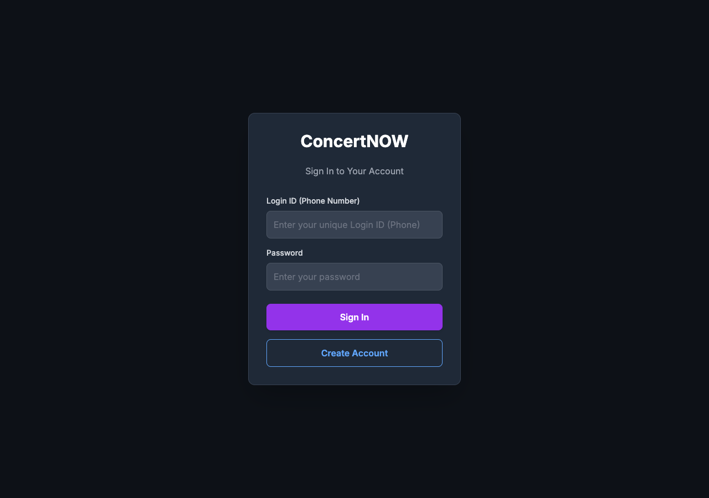
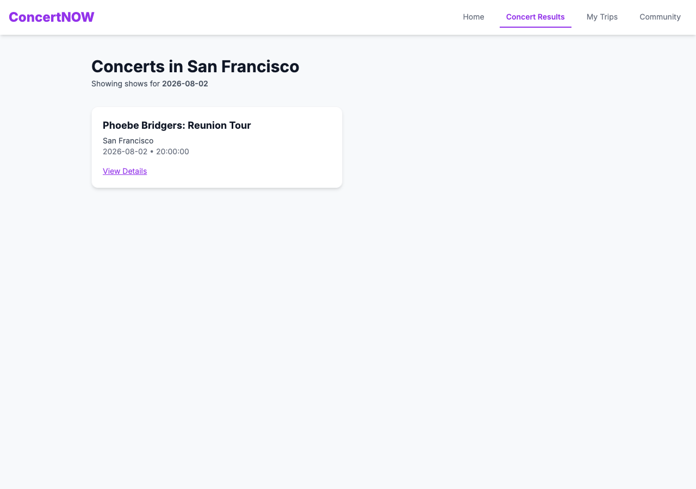
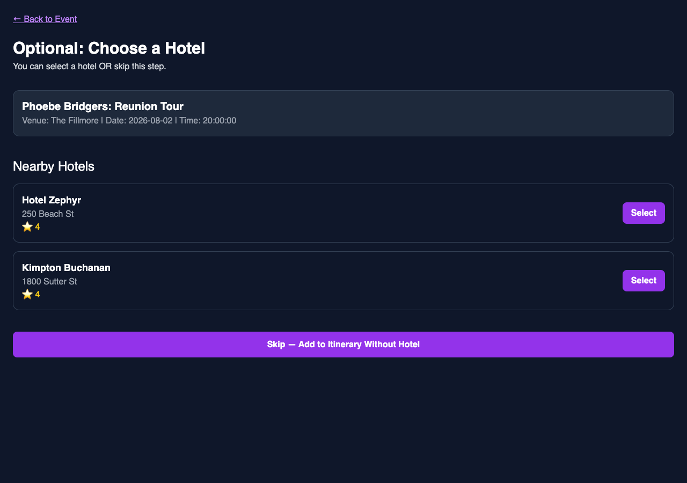
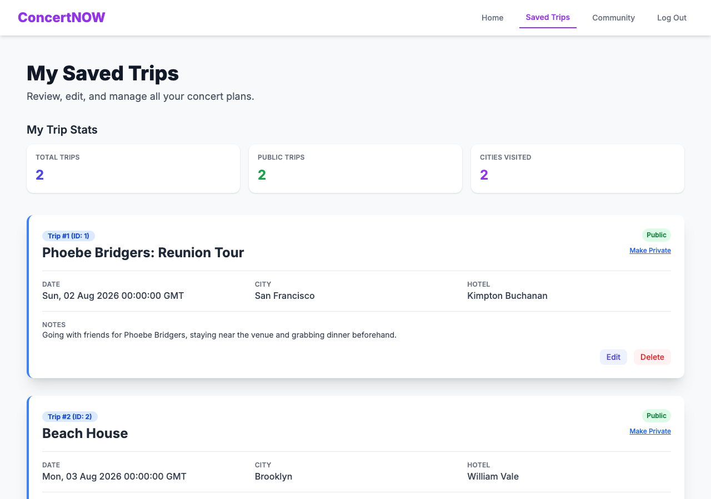
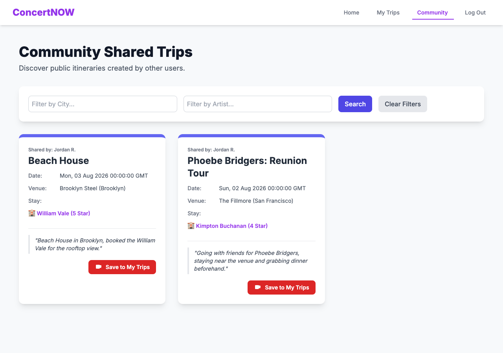

The numbers
Team & my role
Built with Yi-Hsin Chang and Zoe Hanson as "Team DataDucks" for CS411 (Database Systems, UIUC). From our submitted project report's division-of-labor section: Yi-Hsin led backend database implementation — SQL queries, stored procedure design, managing the Cloud SQL connection. I concentrated on backend logic, API development, and integrating advanced database features — triggers and transaction-based stored procedures — into the Flask application. Zoe built the full frontend.
app.py pointed at
it. Same code, same triggers, same stored procedures — a stand-in
dataset behind it, because the real one isn't reachable from here.
A genuinely live, publicly hosted version (free MySQL + free Flask
hosting, unrelated to the school's Cloud SQL instance) is ready to
deploy — see DEPLOY.md for the 15-minute
setup guide.
Deploying it live surfaced a real constraint
CREATE ROUTINE/ALTER ROUTINE (confirmed via
SHOW GRANTS FOR CURRENT_USER()) but not
TRIGGER — a common restriction on shared free-tier MySQL
hosting, since triggers fire implicitly on any write and are harder
for a host to sandbox than an explicitly-called stored procedure. So
on the live deployment: the 2 stored procedures run as real
MySQL routines, but the 2 triggers can't be created there —
the equivalent visibility rule is enforced in deploy/app.py
instead (compute_enforced_visibility()), same logic,
application layer instead of database layer, only for this specific
hosting constraint. The trigger SQL itself is unchanged and verified
working against any host that does grant the privilege (tested
locally). deploy/setup_free_tier.sql vs
deploy/setup.sql documents the split.
What it does



HOTEL.City = VENUE.City, an intentional simplification of an originally-planned geospatial recommender (see below).
sp_get_user_trip_stats rendered directly, not computed client-side.
Schema
7 tables: USER, VENUE, EVENT,
HOTEL, REVIEW, TRIP,
SAVE. One design change worth calling out: the original
schema stored hotel/venue location as latitude/longitude, which
implied a functional dependency (Latitude, Longitude) →
(State, City) and left the schema short of Third Normal Form.
Revised to Address + Zipcode + City
+ State instead — removes the FD problem and fits the
app's actual access pattern (displaying and city-matching hotels, not
geospatial distance math).
Advanced database programs
Two triggers enforce a data-quality rule at the
database layer rather than trusting the frontend: a trip is
automatically set to Private on insert or update if it's
missing a hotel or has a note under 20 characters — keeping
incomplete or draft trips off the public Community page even if a bug
or an external script bypasses frontend validation.
Two stored procedures:
sp_get_user_trip_stats— aggregates a user's total trips, public trips, and distinct cities visited directly in the database, powering the trip-stats dashboard above without the app layer computing it.sp_copy_public_trip_to_user— the "Save to My Trips" feature, wrapped in an explicit transaction (READ COMMITTEDisolation, row-level locking viaFOR UPDATE) with validation, duplicate-checking, and rollback on failure.
-- from code/advanced_database_programs.sql
SELECT ... FROM TRIP T JOIN EVENT E ON T.EventId = E.EventId
WHERE T.TripId = p_source_trip_id AND T.Visibility = 1
FOR UPDATE;
IF v_event_id IS NULL THEN
SET p_status_code = 1; ROLLBACK;
ELSEIF EXISTS (SELECT 1 FROM TRIP WHERE UserId = p_target_user_id AND EventId = v_event_id) THEN
SET p_status_code = 2; ROLLBACK;
ELSE
INSERT INTO TRIP (...) VALUES (...);
COMMIT;
END IF;Index design: an honest negative result
Query cost analysis (EXPLAIN) across 4 representative
queries, testing several candidate indexes on each. Not every index
helped:
| Query | Baseline cost | Best index tried | Cost after |
|---|---|---|---|
| Hotels in a city with avg rating ≥ 4.5 | 288,072 | HOTEL(City) | 203,339 |
| Top venues by upcoming events + hotel quality | 96,654 | EVENT(EventDate) | 96,654 (no change) |
| Hotels in NYC, most reviews, above-avg rating | 311,108 | HOTEL(City, HotelCode) | 205,124 |
| Upcoming events in the most popular zipcode | 7,122 | EVENT(EventDate) | 17,046 (worse) |
REVIEW(Rating) index actually increased cost
for query 3 before the composite HOTEL(City, HotelCode)
index found the real win — and one index made a query slower, not
faster. Location-based and join-supporting indexes consistently
helped; indexes on columns used only for aggregation/sorting mostly
didn't, because the query's real cost was in building temporary
tables for the joins, not scanning the base table. Full detail,
including the query plans, in the
indexing analysis PDF.